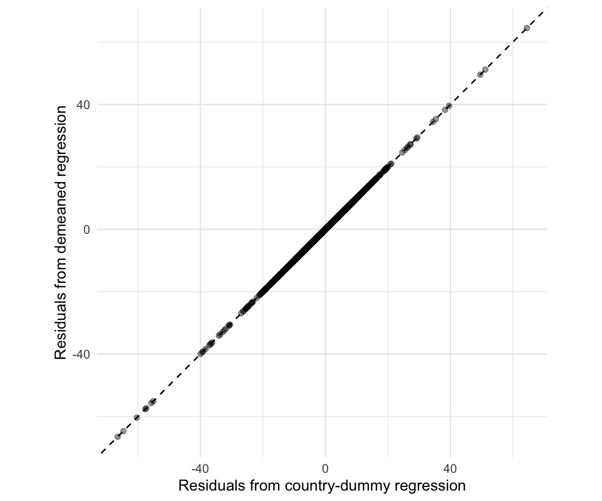

library(haven)
library(dplyr)
raw <- read_dta("DDCGdata_final.dta")
dat <- raw |>
transmute(
country = as.character(wbcode),
year = as.integer(year),
y = as.numeric(y),
dem = as.numeric(dem)
) |>
arrange(country, year) |>
group_by(country) |>
mutate(y_lag = lag(y)) |>
ungroup()
est <- dat |>
filter(!is.na(y), !is.na(dem), !is.na(y_lag))What Does It Mean to “Subtract Out” Fixed Effects?
Econometrics
Fixed Effects
R
A step-by-step explanation of how fixed effects are removed in one-way, two-way, and multi-way models.
Fixed effects appear in many empirical models. However, the phrase “subtracting out the fixed effects” becomes harder to understand as a model includes more fixed-effect dimensions. This post makes that operation explicit. We begin with one time-invariant fixed effect, where the within transformation can be written in terms of group means. We then move to the two-way fixed-effects model. Finally, we use the Frisch–Waugh–Lovell theorem to show the general case where, the outcome and regressors are residualized by subtracting their projections onto the space spanned by the fixed-effect indicators.
Case 1: One Time-Invariant Fixed Effect
To demonstrate the one-way case, consider a country-year panel. Let \(i\) index countries and \(t\) index years. Let \(x_{it}\) denote democracy and \(y_{it}\) denote gross domestic product (GDP). Countries differ in persistent time-invariant factors. We summarize these factors with \(\alpha_i\). They may affect economic performance and may also be correlated with democracy.
\[ y_{it} = \beta x_{it} + \alpha_i + u_{it}, \]
Because \(\alpha_i\) does not change over time, its country mean is also \(\alpha_i\). We can subtract the country-mean equation from the original equation. The fixed effect then disappears and what remains is variation in democracy and GDP around each country’s own average over time.
\[ \begin{aligned} y_{it} - \bar{y}_i &= \beta \left(x_{it} - \bar{x}_i\right) + \left(\alpha_i - \alpha_i\right) + \left(u_{it} - \bar{u}_i\right) \\ &= \beta \left(x_{it} - \bar{x}_i\right) + \left(u_{it} - \bar{u}_i\right). \end{aligned} \]
Another way to remove the time-invariant factor is to include country dummies. This regression gives every country its own intercept:
\[ y_{it} = \lambda + \beta x_{it} + \delta_2 1\{i=2\} + \cdots + \delta_N 1\{i=N\} + u_{it}. \]
| country | dummy part | total intercept |
|---|---|---|
| \(i=1\) | \(0\) | \(\lambda\) |
| \(i=2\) | \(\delta_2\) | \(\lambda+\delta_2\) |
| \(i=N\) | \(\delta_N\) | \(\lambda+\delta_N\) |
The key bridge
We can summarize these country-specific intercepts by defining
\[ \alpha_i = \begin{cases} \lambda, & i=1, \\[4pt] \lambda+\delta_i, & i=2,\ldots,N. \end{cases} \]
This notation gives the same compact fixed-effects model:
\[ y_{it} = \beta x_{it} + \alpha_i + u_{it}. \]
For any given value of \(\beta\), least squares chooses the country-specific intercept to match that country’s mean outcome after accounting for \(x_{it}\). The full least-squares derivation shows this result.
\[ \hat{\alpha}_i = \bar{y}_i - \hat{\beta}\bar{x}_i. \]
Substitute this expression into the fitted residual:
\[ \begin{aligned} \hat{u}_{it} &= y_{it} - \hat{\beta}x_{it} - \hat{\alpha}_i \\ &= y_{it} - \hat{\beta}x_{it} - \left( \bar{y}_i - \hat{\beta}\bar{x}_i \right) \\ &= \left( y_{it} - \bar{y}_i \right) - \hat{\beta} \left( x_{it} - \bar{x}_i \right). \end{aligned} \]
The last line is the residual from the within-transformed regression. Thus, the dummy-variable and within estimators use the same variation and produce the same slope coefficient. Only the computation differs. The dummy-variable regression estimates the country intercepts, while the within transformation removes them before estimating \(\beta\).
Full least-squares derivation
The intercept and country dummies give each country its own intercept \(\alpha_i\). We can therefore write the fixed-effects regression as
\[ \min_{\beta,\{\alpha_i\}} \sum_{i=1}^{N} \sum_{t=1}^{T_i} \left( y_{it} - \beta x_{it} - \alpha_i \right)^2. \]
Hold \(\beta\) fixed. The first-order condition for \(\alpha_i\) is
\[ -2 \sum_{t=1}^{T_i} \left( y_{it} - \beta x_{it} - \alpha_i \right) = 0. \]
Rearrange this condition:
\[ \sum_{t=1}^{T_i} y_{it} - \beta \sum_{t=1}^{T_i} x_{it} - T_i \alpha_i = 0. \]
Solve for the country intercept:
\[ \alpha_i = \frac{1}{T_i} \sum_{t=1}^{T_i} y_{it} - \beta \frac{1}{T_i} \sum_{t=1}^{T_i} x_{it}, \]
or
\[ \alpha_i(\beta) = \bar y_i - \beta \bar x_i. \]
Substitute this intercept back into the least-squares objective:
\[ \min_\beta \sum_{i=1}^{N} \sum_{t=1}^{T_i} \left[ \left( y_{it} - \bar y_i \right) - \beta \left( x_{it} - \bar x_i \right) \right]^2. \]
The objective now uses only deviations from country means. It is the same least-squares problem as OLS on the within-transformed variables.
Empirical example: democracy and economic growth
We illustrate the one-way result using data from Acemoglu, Naidu, Restrepo, and Robinson’s Democracy Does Cause Growth (Journal of Political Economy, 2019). The file DDCGdata_final.dta is available from the MIT Economics replication archive.
In the replication data, y measures log GDP per capita in 2000 constant dollars multiplied by 100. The variable dem is the democracy indicator. We include one lag of the outcome to form a simplified dynamic model:
\[ y_{it} = \beta dem_{it} + \rho y_{i,t-1} + \alpha_i + u_{it}. \]
Our goal is not to reproduce the paper’s preferred specification, which also includes time fixed effects. We also do not address the dynamic-panel issues created by the lagged outcome. We use this simplified model only to compare country dummies with manual demeaning on the same sample. The code below constructs that sample and applies both methods.
The table compares the within transformation with country-specific dummies. Both methods give the same coefficient on democracy and the same coefficient on the lagged outcome.
library(dplyr)
library(tibble)
library(knitr)
# Country-dummy representation
m_dummies <- lm(
y ~ dem + y_lag + factor(country),
data = est
)
# Equivalent within transformation
within <- est |>
group_by(country) |>
mutate(
y_within = y - mean(y),
dem_within = dem - mean(dem),
y_lag_within = y_lag - mean(y_lag)
) |>
ungroup()
# Regression on within-transformed variables
m_demeaned <- lm(
y_within ~ dem_within + y_lag_within - 1,
data = within
)
# Compare the two implementations
comparison <- tibble(
Regressor = c(
"Democracy",
"Lagged outcome"
),
`Country dummies` = unname(
coef(m_dummies)[c("dem", "y_lag")]
),
`Manual demeaning` = unname(
coef(m_demeaned)[c("dem_within", "y_lag_within")]
)
)
kable(
comparison,
digits = 3,
align = c("l", "r", "r")
)| Regressor | Country dummies | Manual demeaning |
|---|---|---|
| Democracy | 1.398 | 1.398 |
| Lagged outcome | 0.977 | 0.977 |
The equivalence also holds for the residuals. Once we write the country-specific intercept as \(\hat{\alpha}_i=\bar y_i-\hat\beta\bar x_i\), the two regressions produce the same residual for every observation. The following figure verifies this result:
library(ggplot2)
library(tibble)
residual_comparison <- tibble(
`Country dummies` = resid(m_dummies),
`Manual demeaning` = resid(m_demeaned)
)
ggplot(
residual_comparison,
aes(x = `Country dummies`, y = `Manual demeaning`)
) +
geom_point(alpha = 0.4) +
geom_abline(
intercept = 0,
slope = 1,
linetype = "dashed"
) +
coord_equal() +
labs(
x = "Residuals from country-dummy regression",
y = "Residuals from demeaned regression"
) +
theme_minimal()
Case 2: Two-Way Fixed Effects
The country fixed effect removes persistent differences across countries. But countries may also face shocks that are common in a given year. Let \(\gamma_t\) denote this year component. Using the notation from Case 1, the two-way fixed-effects model is
\[ y_{it} = \beta x_{it} + \alpha_i + \gamma_t + u_{it}. \]
When the panel is balanced, a simple transformation removes both fixed effects (Wooldridge, 2025). For any variable \(x_{it}\), the two-way within transformation is
\[ \begin{aligned} \ddot{x}_{it} &= x_{it} - \bar{x}_{i} - \bar{x}_{t} + \bar{x}, \\ \ddot{y}_{it} &= y_{it} - \bar{y}_{i} - \bar{y}_{t} + \bar{y}. \end{aligned} \]
Here, \(\bar{x}_i\) is the time mean for country \(i\). The term \(\bar{x}_t\) is the mean across countries in year \(t\), and \(\bar{x}\) is the overall mean. We define the corresponding means for \(y_{it}\) in the same way. The transformation subtracts the country and year components. It then adds back the overall mean because that mean was subtracted twice. We can see why both fixed effects disappear by applying the same transformation to \(\alpha_i\) and \(\gamma_t\):
\[ \begin{aligned} \ddot{\alpha}_{it} &= \alpha_i - \bar{\alpha}_i - \bar{\alpha}_t + \bar{\alpha} \\ &= \alpha_i - \alpha_i - \bar{\alpha} + \bar{\alpha} \\ &= 0, \\[1em] \ddot{\gamma}_{it} &= \gamma_t - \bar{\gamma}_i - \bar{\gamma}_t + \bar{\gamma} \\ &= \gamma_t - \bar{\gamma} - \gamma_t + \bar{\gamma} \\ &= 0. \end{aligned} \]
Because both fixed-effect components vanish under this transformation, the original regression is equivalent to
\[ \begin{aligned} \ddot{y}_{it} &= \beta \ddot{x}_{it} + \ddot{u}_{it} \\ y_{it} - \bar{y}_{i} - \bar{y}_{t} + \bar{y} &= \beta \left( x_{it} - \bar{x}_{i} - \bar{x}_{t} + \bar{x} \right) + \left( u_{it} - \bar{u}_{i} - \bar{u}_{t} + \bar{u} \right). \end{aligned} \]
In a balanced two-way panel, we can therefore understand the transformation through means. This formula does not extend as simply to an unbalanced panel or to several high-dimensional fixed effects. In those cases, projection provides a clearer description.
Case 3: From Two-Way to Many Fixed Effects with FWL
The one-way and two-way transformations are easy to express in terms of means. With several sets of fixed effects, projection provides the more general language. The Frisch–Waugh–Lovell (FWL) theorem makes this connection precise.
The Frisch–Waugh–Lovell theorem
Consider a linear regression written as
\[ \mathbf{y} = \mathbf{X}\boldsymbol{\beta} + \mathbf{W}\boldsymbol{\gamma} + \mathbf{u}, \]
Here, \(\mathbf{X}\) contains the regressors of interest, and \(\mathbf{W}\) contains the controls. Let \(\mathbf{P}_{\mathbf{W}}\) denote the projection onto the column space of \(\mathbf{W}\). When \(\mathbf{W}\) has full column rank,1 we can write this projection as
\[ \mathbf{P}_{\mathbf{W}} = \mathbf{W}(\mathbf{W}'\mathbf{W})^{-1}\mathbf{W}'. \]
Let \(\mathbf{M}_{\mathbf{W}} = \mathbf{I}-\mathbf{P}_{\mathbf{W}}\) be the annihilator, or residual-maker, matrix. FWL recovers the coefficient on \(\mathbf{X}\) in three steps:
Regress \(\mathbf{y}\) on \(\mathbf{W}\) and keep the residuals:
\[ \tilde{\mathbf{y}} = \mathbf{M}_{\mathbf{W}}\mathbf{y} = (\mathbf{I} - \mathbf{P}_{\mathbf{W}})\mathbf{y} = \mathbf{y} - \mathbf{P}_{\mathbf{W}}\mathbf{y}. \]
Regress \(\mathbf{X}\) on \(\mathbf{W}\) and keep the residuals:
\[ \tilde{\mathbf{X}} = \mathbf{M}_{\mathbf{W}}\mathbf{X} = (\mathbf{I} - \mathbf{P}_{\mathbf{W}})\mathbf{X} = \mathbf{X} - \mathbf{P}_{\mathbf{W}}\mathbf{X}. \]
Regress the residuals from Step 1 on the residuals from Step 2:
\[ \tilde{\mathbf{y}} = \tilde{\mathbf{X}}\boldsymbol{\beta} + \tilde{\mathbf{u}}. \]
The coefficient \(\hat{\boldsymbol{\beta}}\) from Step 3 is the same as the coefficient on \(\mathbf{X}\) in the original regression. FWL removes from \(\mathbf{y}\) and \(\mathbf{X}\) the variation explained by \(\mathbf{W}\). In a fixed-effects model, \(\mathbf{W}\) contains the fixed-effect indicators. With several sets of fixed effects, we can write
\[ \mathbf{W} = \left[ \mathbf{D}_1 \;\; \mathbf{D}_2 \;\; \cdots \;\; \mathbf{D}_K \right], \]
where each \(\mathbf{D}_k\) represents one set of fixed effects. Thus, FWL removes from \(\mathbf{y}\) and \(\mathbf{X}\) the variation explained by all the fixed effects in \(\mathbf{W}\).
Extending the same idea to many fixed effects
International trade provides a useful example. Let \(i\) index exporters, \(j\) importers, and \(t\) years, and consider
\[ \log Trade_{ijt} = \beta RTA_{ijt} + \alpha_{ij} + \gamma_{it} + \delta_{jt} + u_{ijt}, \]
where \(\alpha_{ij}\) represents exporter-importer pair fixed effects, \(\gamma_{it}\) exporter-year fixed effects, and \(\delta_{jt}\) importer-year fixed effects.
In matrix notation, the fixed effects can be collected in
\[ \mathbf{W} = \left[ \mathbf{D}_{\text{pair}} \;\; \mathbf{D}_{\text{exporter-year}} \;\; \mathbf{D}_{\text{importer-year}} \right]. \]
FWL removes from trade and RTA status the variation explained by all three sets of fixed effects. The estimate of \(\beta\) uses the RTA variation that remains.
Empirical example: pair, exporter-year, and importer-year fixed effects
We use the agtpa_applications dataset from the tradepolicy package. It contains bilateral trade flows (\(Trade_{ijt}\)) from exporter \(i\) to importer \(j\) at time \(t\). It also contains an RTA indicator for each exporter-importer pair over time. Our purpose is computational, not causal. We use the model above to compare explicit FWL residualization with high-dimensional fixed-effect absorption. We first prepare the sample and construct the three fixed-effect identifiers.
library(dplyr)
library(fixest)
library(tradepolicy)
library(tibble)
library(knitr)
data("agtpa_applications", package = "tradepolicy")
# Keep a small set of countries so that the explicit FWL
# regressions with dummy variables remain easy to run.
countries <- c(
"USA", "CAN", "MEX", "CHL",
"AUS", "KOR", "JPN", "GBR",
"DEU", "FRA", "ESP", "ITA"
)
trade_est <- agtpa_applications |>
filter(
exporter %in% countries,
importer %in% countries,
exporter != importer,
year %in% seq(1986, 2006, 4),
trade > 0,
!is.na(rta)
) |>
transmute(
exporter,
importer,
year,
ln_trade = log(trade),
rta,
pair = interaction(
exporter, importer,
drop = TRUE
),
exporter_year = interaction(
exporter, year,
drop = TRUE
),
importer_year = interaction(
importer, year,
drop = TRUE
)
)To make the projection visible, we implement FWL directly. Define \(y_{ijt}=\log Trade_{ijt}\) and \(x_{ijt}=RTA_{ijt}\). We stack these observations in the vectors \(\mathbf{y}\) and \(\mathbf{x}\). We then project both vectors onto the space spanned by the pair, exporter-year, and importer-year indicators. As above, \(\widetilde{\mathbf{y}}\) and \(\widetilde{\mathbf{x}}\) denote the resulting residual vectors.
# Residualize the outcome with respect to all fixed effects.
y_on_fe <- lm(
ln_trade ~ pair + exporter_year + importer_year,
data = trade_est
)
# Residualize the RTA indicator with respect to the same fixed effects.
x_on_fe <- lm(
rta ~ pair + exporter_year + importer_year,
data = trade_est
)
# Store the two residualized variables.
trade_fwl <- trade_est |>
mutate(
y_tilde = resid(y_on_fe),
x_tilde = resid(x_on_fe)
)
# Estimate the partialled-out regression.
m_fwl <- lm(
y_tilde ~ x_tilde - 1,
data = trade_fwl
)In matrix notation, the two auxiliary regressions produce
\[ \widetilde{\mathbf{y}} = \mathbf{M}_{\mathbf{W}}\mathbf{y}, \qquad \widetilde{\mathbf{x}} = \mathbf{M}_{\mathbf{W}}\mathbf{x}. \]
Each entry of \(\widetilde{\mathbf y}\) and \(\widetilde{\mathbf x}\) corresponds to one exporter–importer–year observation. In the code, these residuals are stored as y_tilde and x_tilde. The final OLS regression uses only the parts of log trade and RTA status that are orthogonal to the three fixed effects. This is the multi-way version of subtracting a country mean in Case 1.
The same model with feols()
The same specification can be estimated directly with feols(), which absorbs the three high-dimensional fixed effects without requiring us to create their dummy variables explicitly:
m_feols <- feols(
ln_trade ~ rta |
pair + exporter_year + importer_year,
data = trade_est
)trade_comparison <- tibble(
Method = c(
"FWL: residualize y and x",
"feols: absorb fixed effects"
),
Estimate = c(
unname(coef(m_fwl)["x_tilde"]),
unname(coef(m_feols)["rta"])
)
)
kable(
trade_comparison,
digits = 6,
align = c("l", "r")
)| Method | Estimate |
|---|---|
| FWL: residualize y and x | -0.094595 |
| feols: absorb fixed effects | -0.094595 |
The two estimates are identical up to numerical precision. The explicit FWL calculation shows the algebra. It removes the fixed-effect component from both the outcome and the regressor before estimating the slope. feols() performs the same operation with algorithms designed for high-dimensional fixed effects.
The three cases describe the same operation, not different fixed-effects estimators. With one fixed effect, the projection reduces to subtracting a group mean. With two fixed effects in a balanced panel, it reduces to double demeaning. With many fixed effects, we subtract the projection onto the full fixed-effect space.
References
- Daron Acemoglu, Suresh Naidu, Pascual Restrepo, and James A. Robinson, “Democracy Does Cause Growth,” Journal of Political Economy 127(1), 2019, 47–100. Replication materials: https://economics.mit.edu/sites/default/files/inline-files/replication_files_ddcg%20%281%29.rar
- Jeffrey M. Wooldridge, “Two-way fixed effects, the two-way Mundlak regression, and difference-in-differences estimators,” Empirical Economics (2025). Open access: https://link.springer.com/article/10.1007/s00181-025-02807-z
- Sergio Correia, “A Feasible Estimator for Linear Models with Multi-Way Fixed Effects.” PDF: https://scorreia.com/research/hdfe.pdf
- Yoto V. Yotov, Roberta Piermartini, José-Antonio Monteiro, and Mario Larch, An Advanced Guide to Trade Policy Analysis: The Structural Gravity Model, WTO and UNCTAD, 2016.
Footnotes
With complete sets of indicators for several fixed-effect dimensions, \(\mathbf{W}\) is usually rank deficient. Some indicator columns are linear combinations of others. Software handles this by removing redundant columns or imposing normalizations. These choices do not change the projection, residuals, or slope coefficients.↩︎